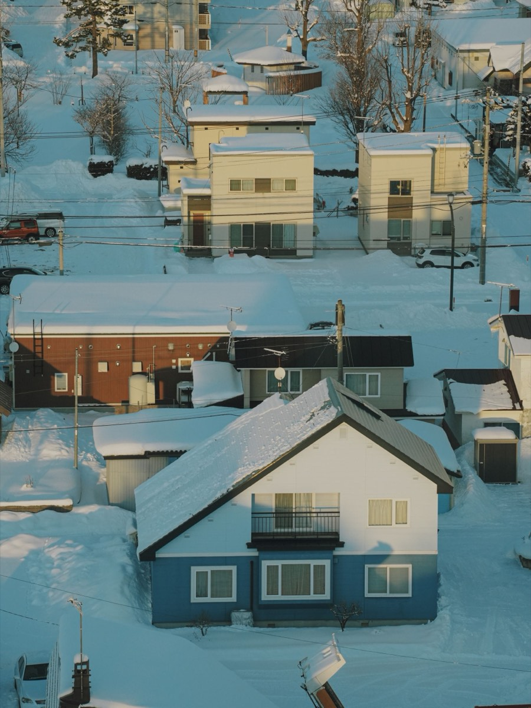

Kamikawa & Douhoku
上川・道北エリアの訪問診療
士別市・富良野市・美深町・下川町・和寒町・剣淵町など、上川総合振興局管内の市町村についてのご相談を承ります。

上川総合振興局管内は23市町村からなり、旭川市（中心エリア）と名寄市・士別市・剣淵町（対応エリア＝定期的に伺っている地域）を除く市町村は「個別相談」の区分です。伺えないという意味ではなく、ご住所・病状・道路状況・診療体制をふまえて一件ずつ判断するという意味です。
- 市町村ごとの旭川からの目安距離と区分を表にまとめています
- 距離のある地域では訪問の頻度とオンライン診療の組み合わせを設計します
- 冬季（12〜3月）は暴風雪により日程を変更することがあります
- 画像検査や入院は近隣の医療機関へ受診の調整・ご紹介を行います
- お受けできない場合も地域で相談できる先の探し方をご案内します
道北で訪問診療を探すときの現実
上川総合振興局管内は、旭川市・士別市・名寄市・富良野市の4市と19の町村で構成されています。面積が広く、市町村の中心部から病院までの距離が長い地域が多くあります。冬季には、その距離がさらに重くのしかかります。
この地域で訪問診療を探すとき、多くの方が「そもそも来てくれる医療機関があるのか」という段階でつまずきます。訪問診療は、月2回程度の定期訪問を何年も続けていく医療です。医療機関の側からすると、移動時間が長い地域を継続して担当できるかどうかは、体制の問題として現実的に検討せざるを得ません。
当院は旭川市に拠点があり、名寄市・士別市・剣淵町を対応エリアとして定期的に伺っています。それ以外の上川管内の市町村については、一件ずつ状況を伺ったうえで判断させていただいています。曖昧な言い方に見えるかもしれませんが、「エリア内です」とだけ書いて実際には継続できない、という事態を避けるための線引きです。
Distance & zone
市町村別の対応状況（距離と区分）
上川総合振興局管内23市町村の一覧です。距離は旭川市中心部からのおおよその道路距離です。
| 市町村 | 旭川からの目安距離 | 区分 |
|---|---|---|
| 旭川市 | — | 中心エリア |
| 名寄市 | 約80km | 対応エリア |
| 士別市 | 約50km | 対応エリア |
| 富良野市 | 約55km | 個別相談 |
| 鷹栖町 | 約10km | 個別相談 |
| 東神楽町 | 約10km | 個別相談 |
| 当麻町 | 約20km | 個別相談 |
| 比布町 | 約20km | 個別相談 |
| 愛別町 | 約30km | 個別相談 |
| 上川町 | 約50km | 個別相談 |
| 東川町 | 約20km | 個別相談 |
| 美瑛町 | 約25km | 個別相談 |
| 上富良野町 | 約40km | 個別相談 |
| 中富良野町 | 約50km | 個別相談 |
| 南富良野町 | 約90km | 個別相談 |
| 占冠村 | — | 個別相談 |
| 和寒町 | 約40km | 個別相談 |
| 剣淵町 | 約45km | 対応エリア |
| 下川町 | 約100km | 個別相談 |
| 美深町 | 約100km | 個別相談 |
| 音威子府村 | 約130km | 個別相談 |
| 中川町 | — | 個別相談 |
| 幌加内町 | — | 個別相談 |
※ 距離は一般的な道路距離のおおよその目安です（10km単位で丸めています）。経路や季節により実際の移動時間は大きく変わります。「—」は概数をお示しできないことを表します。区分は2026年8月時点のものです。「必ず伺います」というお約束はいたしかねます。
地域別のご案内
地域によって確認する点が異なります。3つのまとまりに分けてご説明します。
士別市・剣淵町・和寒町
国道40号沿いに並ぶ3市町です。旭川から名寄へ向かう途中に位置するため、名寄市への訪問と経路が重なります。距離は旭川からおよそ40〜50キロメートルで、上川管内のなかでは比較的移動しやすい範囲です。士別市と剣淵町は当院の対応エリアで、定期的に伺っています（和寒町は個別相談）。なお、上川管内の外になりますが、留萌振興局管内の羽幌町も対応エリアとして定期的に伺っています。
ご相談の際に確認するのは、市街地か郊外か、冬季に除雪が入る道路沿いかどうか、そして地域の訪問看護ステーションや薬局と連携が組めるかどうかです。士別市には入院を受けられる医療機関があるため、急変時の道筋を立てやすい地域でもあります。剣淵町・和寒町については、士別市または名寄市の医療機関との役割分担を含めて調整します。
富良野市・上富良野町・中富良野町・美瑛町
旭川から南へ、国道237号沿いに位置する地域です。美瑛町は旭川からおよそ25キロメートル、富良野市はおよそ55キロメートルです。美瑛町と上富良野町は旭川に近く、比較的ご相談いただきやすい範囲にあります。
この地域で特に確認するのは、丘陵地の冬季の道路状況です。夏は快適な道でも、冬は吹きだまりや視界不良で通行が難しくなる区間があります。郊外にお住まいの場合は、除雪の入り方と、玄関までの経路を具体的に伺います。富良野市には入院を受けられる医療機関があり、急変時の受け入れ先を含めて相談しやすい地域です。南富良野町と占冠村については、距離と冬季の峠越えを含めて個別に判断します。
美深町・下川町・音威子府村・中川町・幌加内町
名寄市より北、あるいは山あいに位置する町村です。旭川からはおよそ100キロメートル以上、中川町や音威子府村はさらに遠くなります。冬季の移動には相応の時間を見込む必要があります。
これらの地域では、当院が単独で継続的に訪問することが難しい場合があります。そのため、ご相談をいただいた際は、まず地域の医療機関や訪問看護ステーションの状況を伺い、どこがどの役割を担えるかを整理するところから始めます。オンライン診療を組み込んだ形が現実的な選択肢になることもあります。
お受けできない場合も、そのままお断りするのではなく、お住まいの市町村の地域包括支援センターやケアマネジャーを通じた探し方をご案内します。名寄市に隣接する下川町・美深町については、名寄市の訪問診療のページもあわせてご覧ください。

冬季（12〜3月）の訪問について
道北の冬は、11月から根雪になり、3月まで積雪が続きます。1月から2月にかけては、日中でも氷点下が続く日が珍しくありません。訪問診療にとって、冬季は次のような制約が生じる季節です。
- 移動時間が延びる：夏に1時間の道が、1時間半以上かかることがあります。1日に回れる件数が減ります。
- 予定が動く：暴風雪警報や視界不良で、当日に日程を変更せざるを得ない日があります。
- 玄関までが難所になる：道路から玄関までの通路が雪で埋まると、医療機器を持って入ることが難しくなります。
そのため、冬季は、玄関前と駐車スペースの除雪にご協力をお願いしています。日中に除雪が難しいご家庭は、その旨を事前にお知らせください。訪問の時刻を調整するなど、方法を一緒に考えます。
薬については、悪天候で訪問が延びても切れないよう、残りの日数に余裕をもって処方することを基本としています。停電に備えて、在宅酸素や吸引器をお使いの場合の対応も、開始時に確認しておきます。
訪問頻度とオンライン診療の組み合わせ
距離のある地域では、訪問の回数を増やすことよりも、訪問と訪問の間をどう埋めるかが重要になります。当院では、次の3つを組み合わせて設計します。
| 手段 | できること | 向いている場面 |
|---|---|---|
| 定期訪問 | 直接の診察、聴診、処置、薬の調整、ご家族との面談 | 状態の評価が必要なとき、処置があるとき |
| オンライン診療 | 顔色・呼吸・むくみの確認、記録を見ながらの薬の調整、ご家族の同席 | 状態が安定していて、経過の確認が中心のとき |
| 電話でのご相談 | 症状の聞き取り、受診・搬送の要否の判断、指示 | 訪問日の間に体調が変わったとき、夜間・休日 |
※ 医師が対面での診察が必要と判断した場合は、オンライン診療から訪問または受診に切り替えます。オンライン診療は厚生労働省の指針に沿って実施しています。
地域の病院・訪問看護ステーションとの連携
訪問診療は、一つの医療機関だけで完結する医療ではありません。特に道北のように医療資源が限られる地域では、地域の医療機関・訪問看護ステーション・薬局との役割分担が、そのまま療養の安定につながります。
当院が担うのは、日常的な診療、慢性疾患の管理、処方、書類の作成、そして急変時の判断です。画像検査や入院が必要になった場合は、近隣の基幹病院や検査施設へ受診の調整またはご紹介を行います。処置や日々の観察は、地域の訪問看護ステーションにお願いすることが多くあります。
すでにかかりつけの医療機関がある場合は、そちらとの併診という形もとれます。専門的な治療は従来の医療機関で続け、日常の管理を当院が担う、という役割分担です。開始前の面談で、どの医療機関がどの役割を担うかを整理してご説明します。
対応可否のご相談方法
お電話（0166-74-3774）でご相談ください。次の4点をお聞かせいただけると、対応できるかどうかのご返答が早くなります。
- 訪問先のご住所（市町村名だけでなく、地区までお願いします）
- 現在の病状、かかりつけの医療機関、通院の状況
- 介護保険の利用状況（担当のケアマネジャーがいる場合はその旨）
- ご家族や施設の支援体制、ご希望の開始時期
ケアマネジャーさま、病院の地域連携室、訪問看護ステーションからのご相談も承ります。連携に関するご依頼はケアマネジャー・医療機関の皆さまへをご覧ください。
※ 本ページの内容は一般的な説明であり、個別の診断・治療方針を示すものではありません。距離は目安であり、実際の移動時間を保証するものではありません。FAQ
道北の方からよくいただくご質問
上川管内の町村は「個別相談」とありますが、断られるということですか？
いいえ、伺えないという意味ではありません。ご住所（地区まで）、病状と必要な訪問の間隔、冬季の道路状況、地域の訪問看護ステーションや薬局との連携が組めるかどうかをふまえて、一件ずつ判断するという意味です。同じ町でも、市街地か郊外かで答えが変わることがあります。まずはお電話でご住所と現在の状況をお聞かせください。お受けできない場合も、その理由と、地域で相談できる先の探し方をご案内します。
道北は医療機関が少ないと聞きます。訪問診療を探すのは難しいですか？
道北は市町村の面積が広く、医療機関までの距離が長い地域です。そのため、訪問診療を行う医療機関の選択肢も限られます。ただ、探し方の順序を知っていると、たどり着ける可能性は上がります。まずはお住まいの市町村の地域包括支援センター、次に担当のケアマネジャー、そして現在のかかりつけ医や入院先の退院支援室に相談する、という順序をおすすめしています。詳しい手順は、北海道の訪問診療をお探しの方へのページにまとめています。
冬の間だけ訪問診療にすることはできますか？
季節によって通院と訪問を切り替えるご相談も承ります。ただし、訪問診療は継続的な管理を前提とする医療であり、その都度の切り替えが医学的に適切かどうかは病状によります。冬季の通院が特に負担になる方については、通年で訪問診療を受けていただいたうえで、状態が安定していれば訪問の間隔を調整するという形をご提案することが多くあります。
訪問の回数が月1回になる場合、間の期間はどう診てもらえますか？
オンライン診療と電話でのご相談、訪問看護との連携で補います。オンライン診療では、顔色や呼吸の様子、むくみの程度を画面越しに確認し、血圧や体重の記録を見ながら薬を調整できます。夜間・休日は電話でご相談いただけるオンコール体制をとっています（主治医への直通をお約束するものではありません。緊急時は119番を優先してください）。
地元の病院や訪問看護ステーションとの関係はどうなりますか？
地域の医療機関・訪問看護ステーション・薬局と役割を分けて進めます。日常的な診療と処方は当院が担い、画像検査や入院が必要な場合は近隣の医療機関へ受診の調整またはご紹介を行います。処置や日々の観察は、地域の訪問看護ステーションにお願いすることが多くあります。すでにかかりつけの医療機関がある場合は、そちらとの併診も含めて役割分担を整理します。